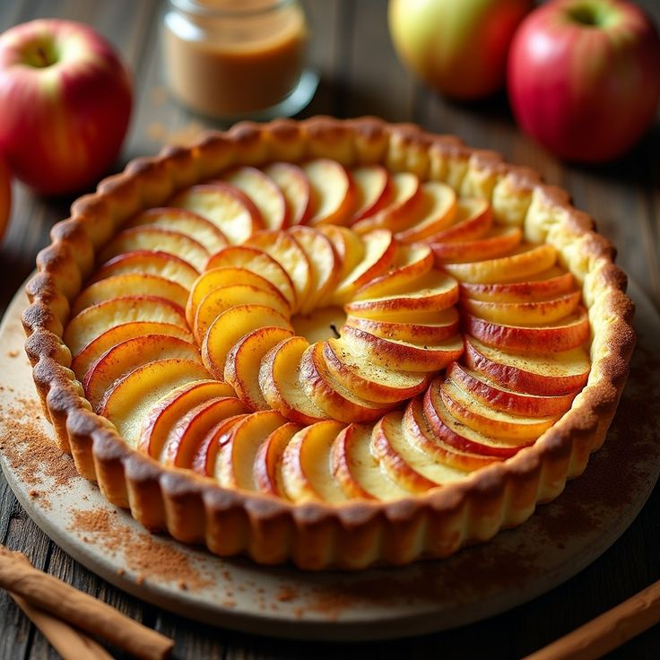

Tarte aux pommes - Dessert Traditionnel Allemand
Ingrédients :
- 250 g de farine
- 125 g de beurre
- 80 g de sucre
- 1 œuf
- 4 pommes coupées en fines tranches
- 1 cuillère à café de cannelle
- 1 sachet de sucre vanillé
- 2 cuillères à soupe de jus de citron
Instructions :
- 1. Mélanger la farine, le beurre, le sucre et l'œuf pour former une pâte.
- 2. Étaler la pâte dans un moule à tarte et réserver au frais.
- 3. Préchauffer le four à 180°C.
- 4. Mélanger les pommes avec le sucre vanillé, la cannelle et le jus de citron.
- 5. Disposer les tranches de pommes sur la pâte.
- 6. Cuire au four pendant 35 minutes.
- 7. Laisser refroidir et déguster !